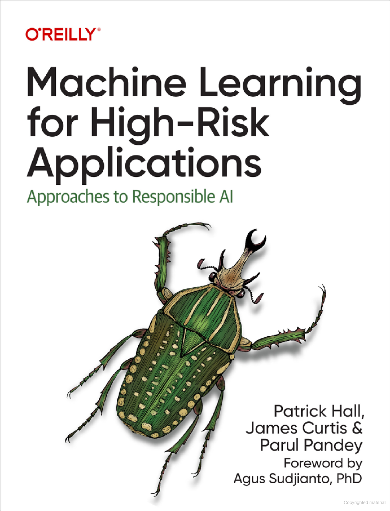
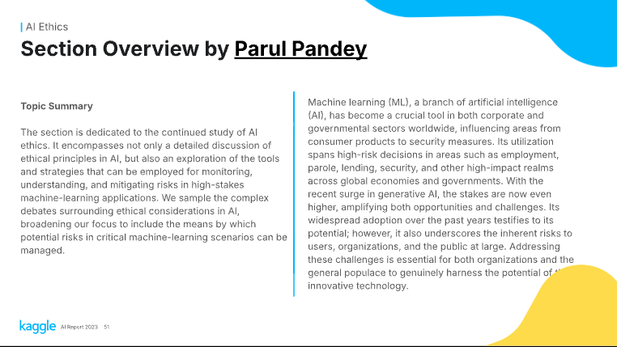

Hi, I'm Parul. I bring together data science expertise and developer advocacy to bridge the gap between technology and its users. I am particularly passionate about Machine Learning for High-Risk Applications, where the stakes are significant, and the need for accuracy and ethical considerations is paramount. I am also deeply involved in open source and developer communities, which helps me stay connected and contribute meaningfully. Additionally, I have also co-authored a book on Machine Learning for High Risk Applications. I am a frequent speaker at conferences and meetups, and I also write on my blog. I am a strong advocate for responsible AI and AI security.
The past decade has witnessed the broad adoption of artificial intelligence and machine learning (AI/ML) technologies. However, a lack of oversight in their widespread implementation has resulted in some incidents and harmful outcomes that could have been avoided with proper risk management. Before we can realize AI/ML's true benefit, practitioners must understand how to mitigate its risks.
This book describes approaches to responsible AI—a holistic framework for improving AI/ML technology, business processes, and cultural competencies that builds on best practices in risk management, cybersecurity, data privacy, and applied social science.
I achieved the title of Kaggle Grandmaster in 2020, becoming the first woman in India and the second globally to earn this distinction. in the Notebooks category. My passion lies in explaining concepts and exploring datasets, making the Notebooks category a natural fit for me. At my peak, I ranked 7th in this category worldwide. Additionally, my team secured 6th place in the WIDS Datathon.
Notably, my notebook titled Geek Girls Rising: Myth or Reality! won a prize in Kaggle’s 2019 ML and DS Survey. My active engagement on Kaggle has led me to speak at various Kaggle Days Meetups and mentor participants in the 2021 Kaggle BIPOC Grant program.
was one of nine experts selected to judge the Responsible Computing Challenge (RCC) in India. The challenge aimed to equip technologists with a deep understanding of how technology and society intersect. As a judge, I helped select universities that integrated ethics into their curriculum to ensure graduates prioritize critical thinking, address inequality in technology, and build equitable systems..
II served as an Area Chair for the Ethics section of Kaggle's AI Report 2023, where I evaluated essays on ethical principles and risk mitigation strategies in machine learning applications.
{kind=link}
{kind=link}